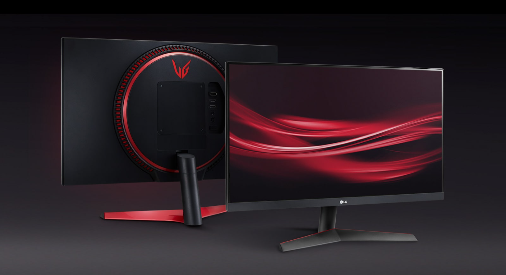

Моніто́р (monitor — слідкувати) або дисплей (display — відображувати) — електронний пристрій для відображення інформації. Пристрій, призначений для відтворення відеосигналу і візуального відображення інформації, отриманої від комп'ютера.
Джо́йстик (англ. joystick) — пристрій-руків'я керування у відеоіграх: важіль на підставці, який можна відхиляти у двох площинах. На важелі можуть бути різного роду гашетки і перемикачі. Словом «джойстик» в побуті називають орган управління, наприклад, в мобільному телефоні. Подібні графічні маніпулятори з'явилися водночас з електронними дисплеями в радіолокаторах, їх прототипом була ручка керування літаком.

Гра́льна консо́ль (або гра́льна приста́вка, ігрова́ консо́ль, ігрова́ приста́вка) — це спеціалізований електронний пристрій, розроблений і створений для того, щоб грати у відеоігри. Найчастіше пристроєм виводу є телевізор або, рідше, комп'ютерний монітор.